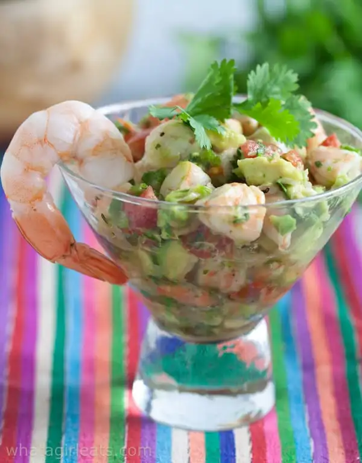

Ceviche

A delicious mexican seafood salad made from only the freshest fish and produce.
No cooking necessary as the acids from the lime juice will do all the work.
Ingredients
-
1 pound fresh, skinless snapper, bass, halibut, or other
ocean fish fillets, cut into 1/2-inch dice
-
1 1/2 cups fresh lime juice
-
1 medium white onion, chopped into 1/2-inch pieces
-
2 medium-large tomatoes (about 1 pound), chopped into 1/2-inch
pieces
-
Fresh hot green chiles (2 to 3 serranos or 1 to 2 jalapeños),
stemmed, seeded and finely chopped
-
1/3 cup chopped cilantro, plus a few leaves for garnish
-
1/3 cup chopped pitted green olives (manzanillos for a typical
Mexican flavor)
-
1 to 2 tablespoons extra-virgin olive oil (optional)
-
Salt
-
3 tablespoons fresh orange juice or 1/2 teaspoon sugar
-
1 large or 2 small ripe avocados, peeled, pitted and diced
-
Tostadas, tortilla chips or saltine crackers, for serving
Steps
-
In a 1 1/2-quart glass or stainless steel bowl, combine the
fish, lime juice and onion. Use enough juice to cover the fish
and allow it to float freely; too little juice means unevenly
"cooked" fish. Cover and refrigerate for about 4 hours, until
a cube of fish no longer looks raw when broken open. Drain in
a colander.
-
In a large bowl, mix together the tomatoes, green chiles,
cilantro, olives and optional olive oil. Stir in the fish and
season with salt, usually about 1/2 teaspoon. Add the orange
juice or sugar. Cover and refrigerate if not serving immediately.
Just before serving, gently stir in the diced avocado.